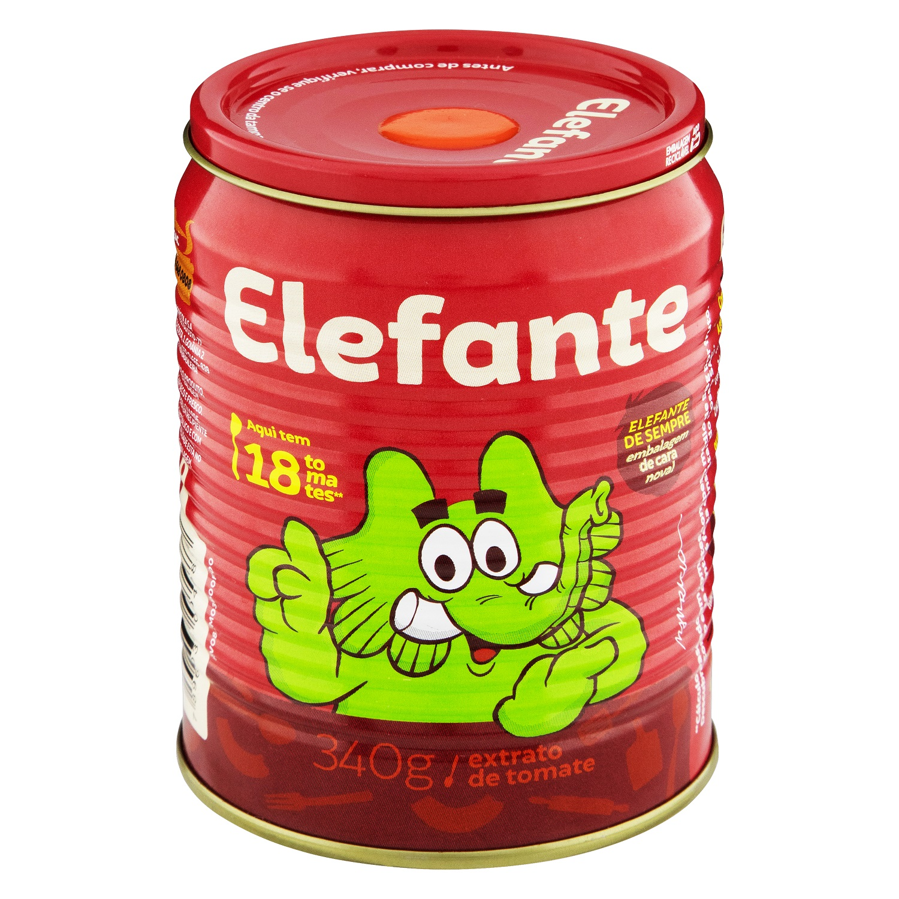
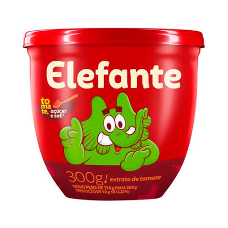
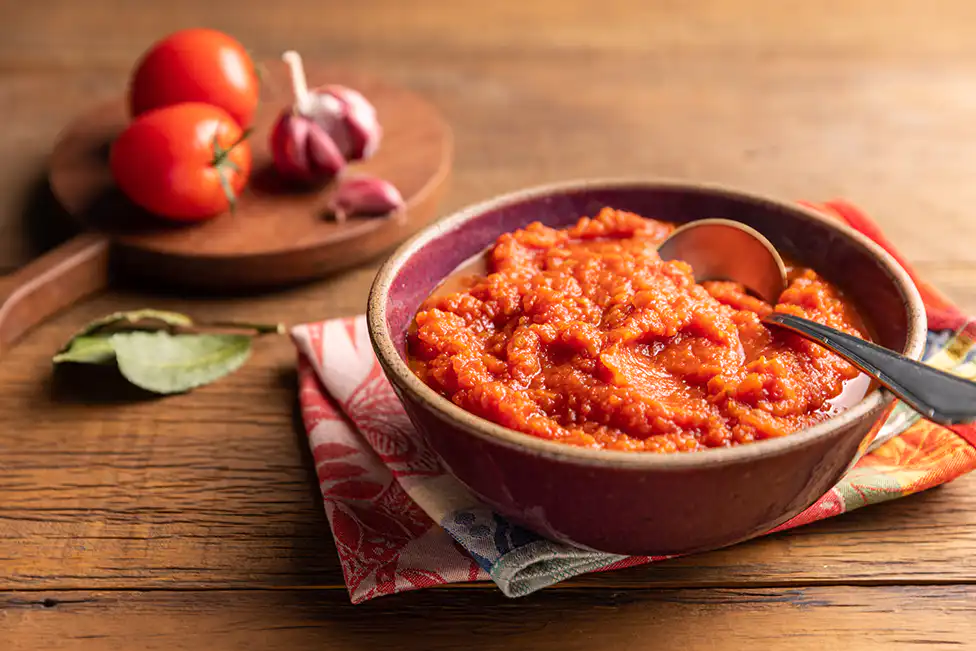
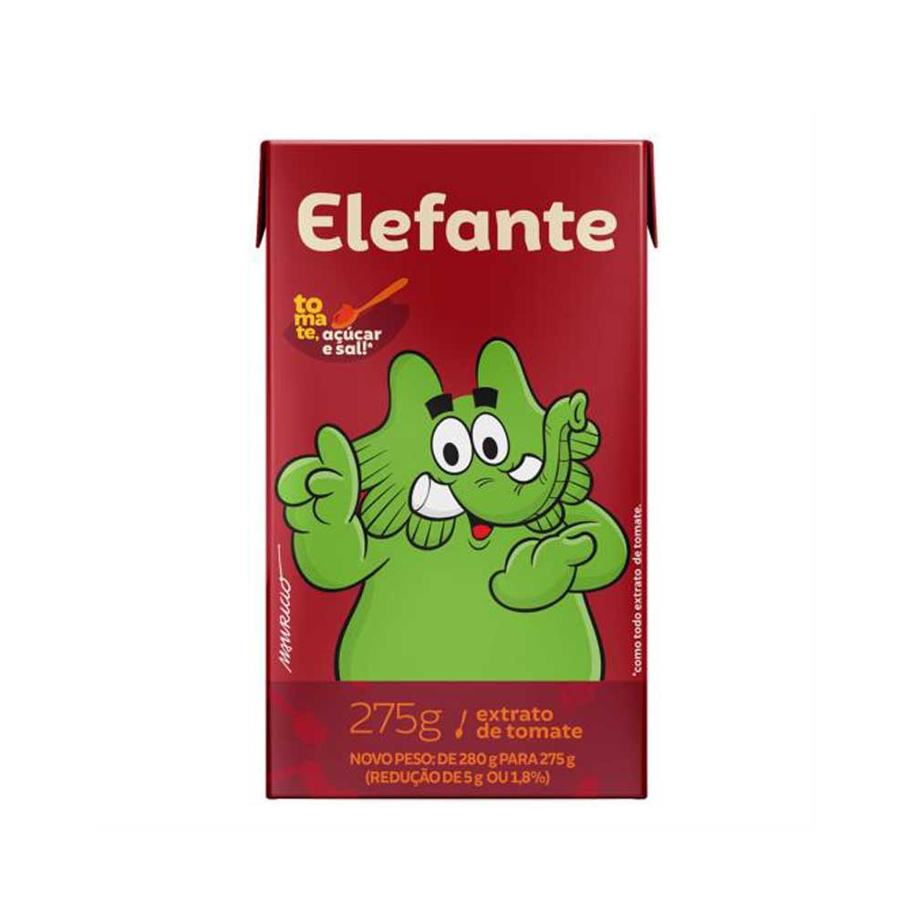

o clássico
Extrato de Tomate
Concentrado, encorpado e pronto para começar qualquer receita.
→— Desde 1977, na mesa dos brasileiros
Tem dias que pedem receita. Tem dias que pedem praticidade. Para todos eles, tem Elefante.


Conte os ingredientes que estão por aí. A gente junta as ideias e devolve uma receita com cara de comida boa.

Um tanto deElefante é aquele ingrediente que chega antes da primeira garfada. É o molho na panela, o extrato no refogado e a certeza de que vai ficar gostoso.
Há quase 50 anos, a gente acompanha as famílias brasileiras com produtos que simplificam a cozinha sem abrir mão do sabor. Porque comida boa precisa de presença.
Conheça os produtos →Do molho pronto ao extrato concentrado: escolha seu jeito preferido de trazer mais cor e sabor para a receita.
Concentrado, encorpado e pronto para começar qualquer receita.
→
O toque de cor e sabor que transforma o refogado.
→Textura gostosa e sabor de tomate para a sua rotina.
→Ideias simples, gostosas e possíveis — para cozinhar agora ou deixar salvo para depois.